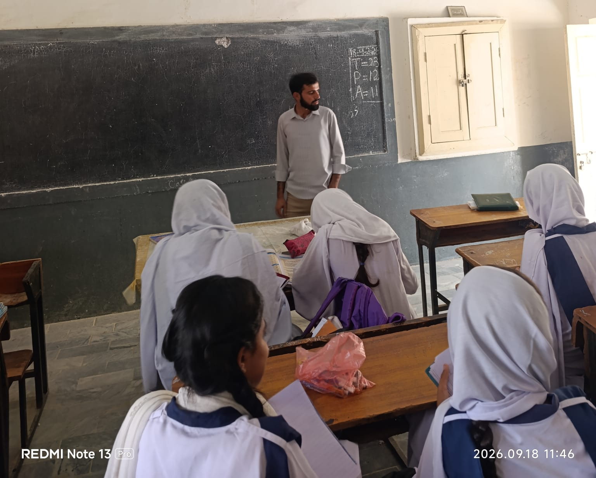
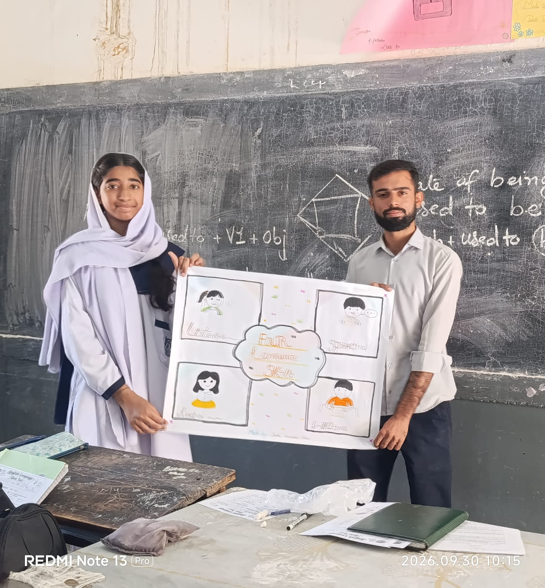
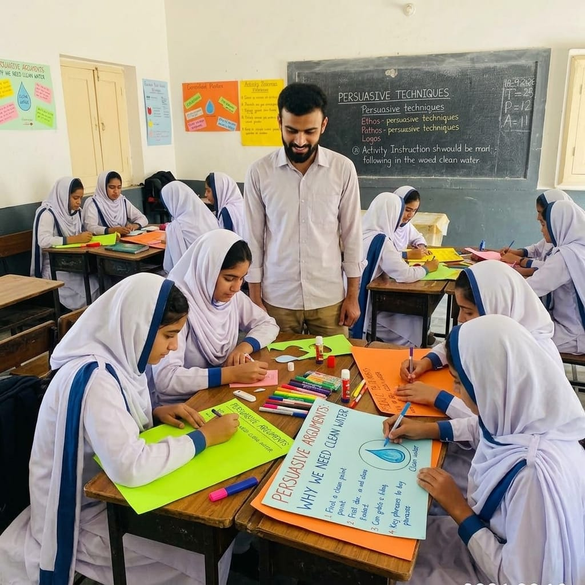
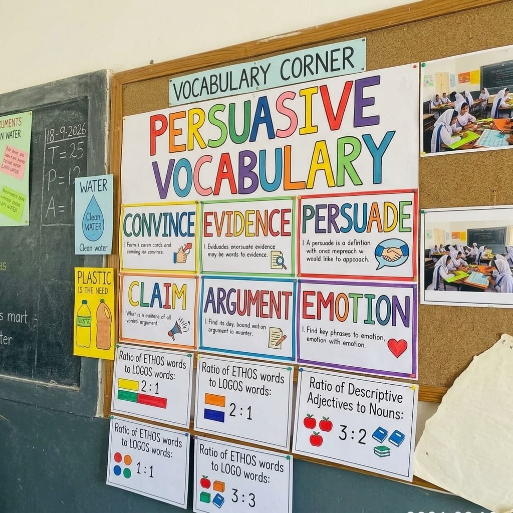

Internship portfolio — teaching placement
Six weeks in a Grade 7th, 8th,9th and 10th classrooms —
this is what I made of them.
I'm Pasand Khan, a BS English Language Teaching student. This portfolio covers my 100-hour teaching internship at Government syed panah Ali Shah Model School, Jamshoro, under the mentorship of Respected Ma'am Zahida.
- Hours logged
- 100 / 100
- Attendance
- 96%
- Class taught
- Grade 7 to 10· English
Student profile
I'm a sixth-semester BS English Language Teaching student. I chose to do my internship in a real classroom rather than an office, because the part of teaching I was least sure about was standing in front of thirty students and actually holding their attention — the theory I'd studied only tells you so much about that.
Before this placement I had guest-taught a handful of one-off sessions for a tuition centre, but this was the first time I was responsible for an actual class across a full term of lessons — planning, marking, and being answerable to a supervisor for it.
- Institute
- Institute of English Language & Literature
- Discipline
- BS English Language Teaching
- Placement
- Government syed panah Ali Shah Model School jamshoro
- Supervisor
- Ma'am Zahida Principal
- Coordinator
- Ma'am Bakhtawar jaleel
- Duration
- 6 weeks · 100 hours
Placement & objectives
Placement details
- Organization
- Government Syed Panah Ali Shah Model School Jamshoro
- Role
- Teaching Intern
- Class / subject
- Grade 7-10, English
- Duration
- 6 weeks (100 hours total)
- Supervisor
- Ma'am Zahida Principal
What I set out to learn
- In order to develop English teaching skills and Improve my communication with students for effective learning and convey lessons actual context
- Plan and deliver full lessons on my own, not just assist
- Practice classroom management with a real group of 30+ students
- Apply lesson-planning theory from coursework to an actual weekly timetable
- Understand how a school day runs beyond the classroom itself
Daily journal
-
Day 01 Wed, Week 1
During an English class observation, the intern noted that while 7th-grade students displayed confidence during self-introductions, they struggled to comprehend deeper questions due to weak core language skills. To remedy this, the intern implemented real-world examples and interactive group chart-making activities over a two-hour session. Additionally, the intern adapted their strategies to teach a similarly struggling 8th-grade class on the same day. Ultimately, by adjusting to the students' backgrounds and leveraging their cooperation, the intern successfully engaged both classes, making the day highly rewarding and amazing.
What I learned — Reflection
- Spot Disengagement Early: Watch for visual cues like confused looks or vague answers to know when a method isn't working
- Lead with Examples: Share concrete examples first to build a clear mental framework before introducing complex skills
- Bridge the Gap for Beginners: Start with familiar scenarios when introducing entirely new concepts to novice learner
- Hook Student Interest: Design lesson entry points around relatable topics to capture attention and boost engagement.
-
Day 02 thur, Week 1
Internship Logbook:Starting my second day was filled with happiness. I was assigned to the same 7th-grade class. I felt very happy to be given a second opportunity to teach them. I entered the classroom with the same question as the day before, but my way of asking it was completely different. When I asked them about the English language and its importance, they answered with enthusiasm. After they shared their answers, one of the students raised her hand and asked, "Sir, can you please give me permission? I want to talk about language skills." I felt very proud, and it was an amazing moment for me to see her initiative and listen to her words. I replied, "Yes, you may speak." She spoke very well and explained the four language skills. Afterward, I introduced new topics that are highly important for students at their level. The core areas of language we covered were grammar, vocabulary, and pronunciation. I discussed these three skills in detail. Before diving into what grammar actually is, along with vocabulary and pronunciation, I assigned them an activity. The task was to "Read a [lesson/passage]" and explain to me how they successfully understood the meaning of the lesson and how they pronounced the words.
What I learned — Reflection
- Day 2 Success: Returning to the same 7th-grade class brought high engagement through a reframed, enthusiastic introductory discussion on English.
- Student Leadership: A student-led presentation on the four language skills fostered a proud, student-centered classroom environment.
- Core Topics Introduced: The lesson transitioned into core linguistic areas, focusing on grammar, vocabulary, and pronunciation.
- Diagnostic Assessment: A practical reading activity was assigned to evaluate the students' baseline comprehension and pronunciation skills.
-
Day 15 Wed, Week 3
Marked a full set of essay drafts and gave one-on-one feedback during class.
What I learned — a specific written note lands better than a grade on its own.
Samples of work
Evidence from the placement — photos and materials go in the slots below.

Lesson plan
Grade 8 reading-comprehension lesson, week 2.

Marked worksheet
Sample of my written feedback style, week 3.

Group activity
A discussion exercise on persuasive writing, week 4.

Bulletin board
A vocabulary display I built with the class, week 5.
Supervisor evaluation
Scored by my supervisor at the end of the placement, on the department's standard 20-point rubric.
"Pasand was reliable, prepared, and — by the end of six weeks — noticeably more confident running a class on his own. He listens to feedback and applies it the next day, which is rarer than it should be."
Ma'am Zahida Principal Government Syed Panah Ali Shah Model School Jamshoro
Contact
Want the full portfolio, my report, or to get in touch about the placement? Send a message.